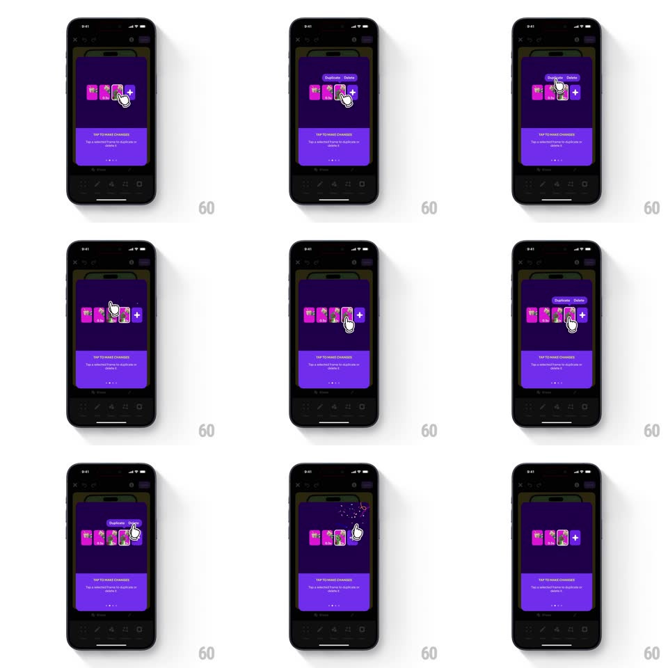

Media
Frame-by-frame

Rebuild this interaction 1:1: Shuffles' make-changes tooltip - the purple card ("TAP TO MAKE CHANGES - Tap a selected frame to duplicate or delete it") demos the frame strip: a finger taps a frame, a springy Duplicate/Delete menu pops, Delete fires a confetti burst and the strip reorganizes smoothly.

Rebuild this interaction 1:1: Shuffles' make-changes tooltip - the purple card ("TAP TO MAKE CHANGES - Tap a selected frame to duplicate or delete it") demos the frame strip: a finger taps a frame, a springy Duplicate/Delete menu pops, Delete fires a confetti burst and the strip reorganizes smoothly.
## Integration
Integration: stack-agnostic spec - springs given as stiffness/damping, timed motions as duration + curve; map every value to your framework and animation library of choice.
## Scene
The dark animator canvas behind a purple coaching card. The demo area holds the frame strip: a horizontal row of pink-collage frame thumbnails ending in a "+" add button. Tapping a frame floats a small dark menu above it with two items: Duplicate and Delete.
## Motion spec
Pattern: popover menu + delete with confetti and reflow.
- The finger cursor taps a middle frame (press scale 0.85, 120ms); the frame highlights with a white ring.
- The action menu pops above the frame: scale 0.6 -> 1 anchored at its bottom edge, spring ~480/16 - a visible bounce - with fade (180ms).
- The finger taps Delete: the frame bursts into confetti (18-24 tiny pieces in the collage's pinks, 600ms, gravity falloff) as the thumbnail shrinks to zero (200ms, ease-in).
- The remaining frames slide together to close the gap (translateX, spring ~350/22, 300ms) - a smooth reflow, not a snap.
- The demo loops: the deleted frame fades back in at its slot before the next cycle.
## Calibration
- The menu bounce is the personality - stiff and quick, one overshoot.
- Confetti originates from the frame's center - the deletion point is unmissable.
## Reduced motion
Menu fades in; deleted frame fades out; strip crossfades to the new layout.
## Don't miss
- Duplicate places the copy immediately right of the source with a slide-in - never at the strip's end.
- The "+" add button rides the reflow - it always trails the last frame.